STYLEPRISMA wardrobe full of clothes. Nothing feels right.
Style Prism explores how a digital wardrobe and personalized styling assistant could help people make outfit decisions using their existing clothes, preferences and everyday context.
Many people own plenty of clothes and still stand in front of the wardrobe unsure what works. The difficulty is less about supply than about deciding: matching what is owned to where they are going and how they want to feel.
I designed for people who dress with a purpose, such as a creative professional unsure of her style and a corporate professional who wants to look competent without spending morning effort. The opportunity I chose: connect inventory (what they own) with context (weather and occasion).
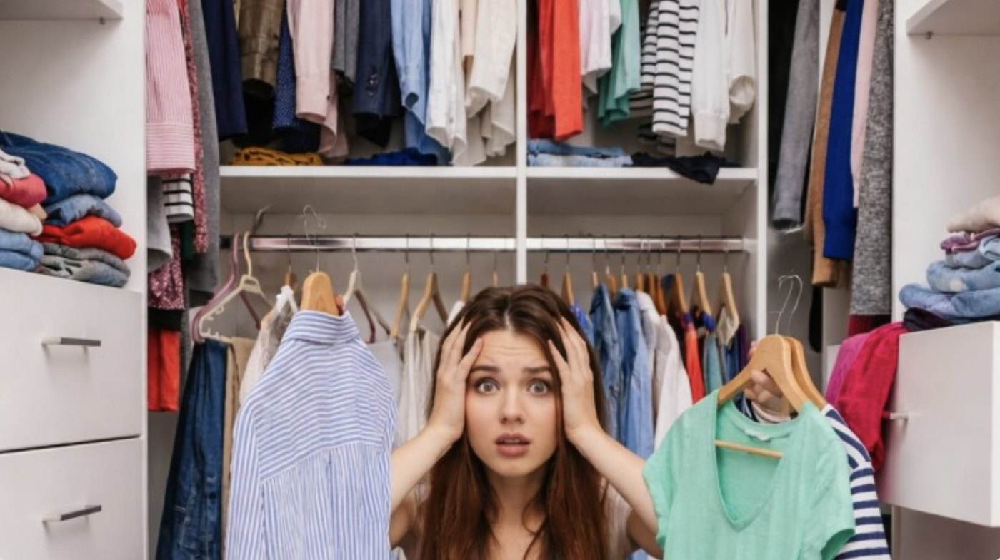
Illustrative photograph of wardrobe overwhelm. Not a research participant.
02 / Understanding the user
Getting beyond what people wear.
Interview synthesis produced two personas. They are illustrative narratives built from research, not verbatim transcripts. Both point to the same thing: the problem is less a lack of clothes than a lack of confidence in pairing them.
Isha
Creative professional
Main motivation
To feel that her clothes match her creative ambition.
Behaviours
Tries on several outfits, gets frustrated and falls back to a “safe uniform”. Saves many Pinterest items but rarely buys connecting pieces.
Pain point
Starting the day with a negative self-image affects her work confidence.
Desired outcome
An objective “third party” to confirm an outfit works before she wears it.
Synthesis
Visual validation matters more than more options.
Arjun
Corporate professional
Main motivation
To look competent and avoid wasting effort on trivial morning decisions.
Behaviours
Rotates the same few safe outfits and buys expensive brands hoping price equals style.
Pain point
Fear that colleagues notice the lack of variety.
Desired outcome
A system that tracks last-worn dates and suggests rotations automatically.
Synthesis
Automation and low effort matter more than self-expression.
Research archive: empathy-map notes
Isha
Think/feel: imposter syndrome, anxiety, overwhelm from micro-trends.
See: curated capsule wardrobes; her own chaotic closet.
Hear: conflicting advice about trends.
Say/do: tries 4 outfits, then wears her safe uniform.
Arjun
Think/feel: clothing as a tool for professional respect; fear of looking “junior”.
See: senior colleagues in tailored suits; his own repetitive blue and grey shirts.
Hear: “dress for the job you want”; implicit dress codes.
Say/do: grabs the top shirt from the pile.
03 / Market exploration
What existing wardrobe apps were solving.
The research pointed to confidence and context, so I looked at what existing wardrobe apps already offered.
I audited four apps. The table records what I observed during that original audit; I have not re-verified it for current versions, so treat it as a snapshot, not a claim about today’s products.
Competitor comparison from the original audit
Product
What it focuses on
What I observed
Design opportunity
Acloset
Wardrobe organising and usage analytics
Strong analytics; suggestions based on temperature only, no event-based logic seen
Tie suggestions to the occasion, not only the weather
Whering
Visual collage wardrobe
“Paper doll” creator; “Dress me” felt like random shuffling
Explain why pieces work together
Style DNA
Colour and body analysis
Helpful analysis; leans toward buying rather than the existing closet
Start from what the user already owns
SYZ AI
Generative virtual try-on
Striking imagery; photo inputs needed for every look
Lower the effort of each daily decision
Observations are from my original audit and have not been re-verified against current app versions. The last column is my design interpretation.
The opportunity wasn’t simply organizing clothes. It was helping people make decisions using what they already own.
A design interpretation, not a proven market-wide finding.
That reading shaped the directions I explored next: a wardrobe inventory built from clothes people already own, weather and occasion on the daily outfit card, recommendations that explain themselves, and a conversational stylist for moments like a friend’s birthday. The project documentation does not tie each decision to a specific competitor, so I treat this as my interpretation.
04 / Structuring the experience
From wardrobe data to outfit decisions.
The audit gave me a direction. Next I needed a structure for it.
User preferencesStyle goals, measurements, skin tone
Wardrobe inventoryItems with type, colour, material, pattern
Weather + occasionContext for the day
Styling logicFilters the wardrobe
Outfit recommendationsThree options, with reasoning
The proposed architecture has seven modules around Home: Profile, Planner, Today, Try-On, Closet, AI Agent and Insights. This is a design proposal. Calendar sync, AI services and computer-vision tagging are concepts in the prototype, not documented as built.
Full module map (proposed)
Profile
Settings, measures, help, style
Planner
Calendar view, add event
Today
Outfit variations, weather
Try-On
Avatar / AR camera, save look
Closet
All items, add new, collections
AI Agent
Chat UI, templates
Insights
Usage, “what-not” analytics
05 / Exploration
Before the interface became polished.
With a structure in mind, I sketched how two key moments might work.
01 — Exploring outfit information
How much weather is enough?
Three pencil variations of the outfit card. In the first, temperature sits small in a corner and I noted it was hard to read. The second makes weather dominant and I asked whether it was too much. The third shrinks it into a compact strip above the outfit and asks “wear this, why?”.
The question was whether weather should be a primary element or a contextual cue. This is an early exploration, not a validated solution.
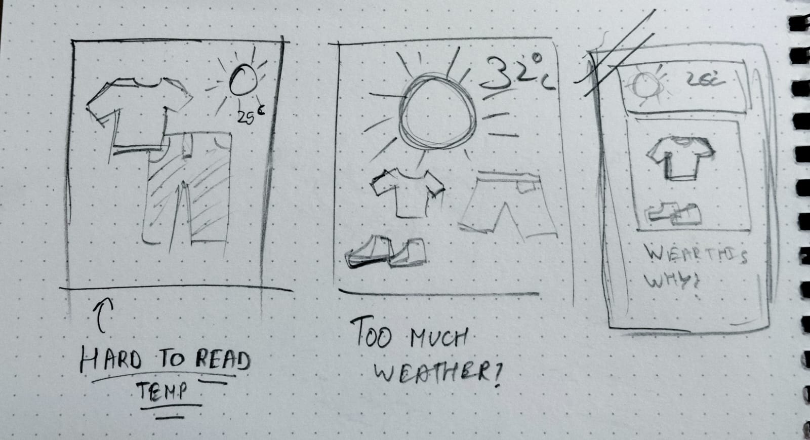
01 / Weather information hierarchy
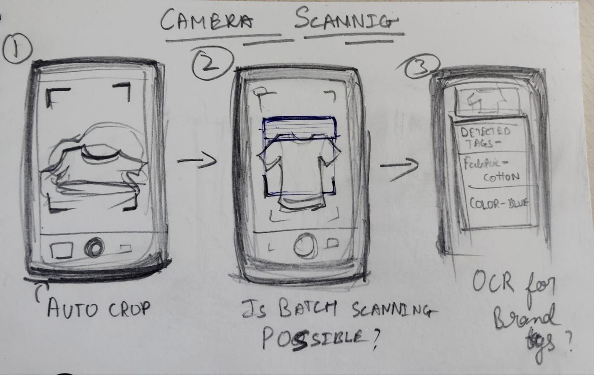
02 / Camera-assisted wardrobe entry
02 — Exploring wardrobe entry
What if adding clothes felt effortless?
The sequence runs from placing a garment in the frame, to detection, to reviewing detected tags such as fabric and colour. My margin notes ask whether auto-crop, batch scanning and OCR for brand tags would be possible.
Those were open questions, not features I documented as built.
03 — Connecting the ideas
One flow, proposed
The sketches fed a concept for how the app would choose outfits. The “why?” note later became the “Why it works” text on the dashboard.
Opens the appMorning trigger
Weather and calendarContext inputs
Filter the wardrobeMatch items to context
Three optionsEach with a reason
Conceptual flow from my planning, not documented as an implemented system.
06 / Version 01
The interface I took into testing.
I carried those ideas into a high-fidelity interface, and that is the version I took into testing.
The first interface collected body measurements, skin tone and style goals up front, then offered a dashboard with Today’s Outfit and a wardrobe gallery, an AI Stylist chat, and an upload flow with AI-detected tags. It was meant to feel personal and low effort.
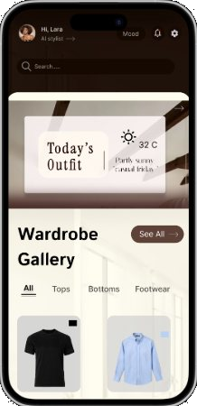
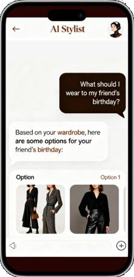
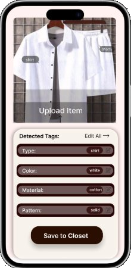
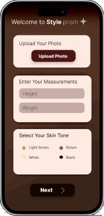
All 11 original screens
11 original screens / Version 01
The first experience, in full.
Before usability testing, I had developed an initial interface covering onboarding, wardrobe management, outfit recommendations, AI-assisted styling, virtual try-on and occasion-based planning. These screens formed the starting point for evaluating the experience.
FIG. 06 — Initial Style Prism interface / Version 01 / Before usability testing
The screens were complete. The questions weren’t.
The next step was understanding whether people could navigate the experience, recognize important actions and complete the intended tasks.
07 / Testing the experience
The interface looked finished. The experience wasn’t.
I used four methods, each answering a different question.
Heuristic evaluation. Expert review of 13 screens against usability principles.
Cognitive walkthrough. Can a new user accomplish core goals?
Think-aloud. Observing behaviour and emotion in person.
Post-task evaluation. SUS and NASA-TLX questionnaires.
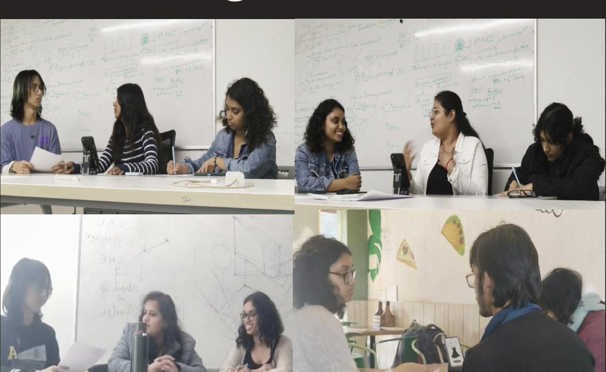
Think-aloud sessions, in person. Source: usability study.
Average SUS, as reported in the study
55/100
Reported lowest 35, highest 68. The study read the low score as a navigation problem: users struggled to find buttons and to reach the calendar. These figures come from the supplied study; I do not report a sample size or significance here.
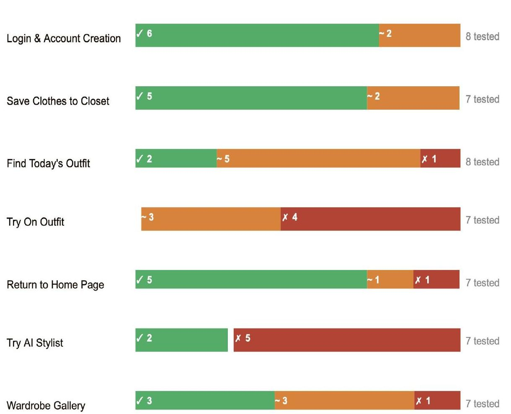
Task outcomes as reported. Weakest: Try On Outfit (3 partial, 4 failed) and Try AI Stylist (2 success, 5 failed).
Documented problems
AI Stylist hard to discover
Key actions hard to find
Unclear outfit-card affordances
Navigation friction
Inconsistent selection controls
Upload confusion
No cancel or recovery
08 / Design iteration
What I changed after watching people struggle.
Each change below responds to a finding. Dashboard and AI Stylist were the two biggest problems, so they get the most space. Before images come from the study; after images are the revised screens.
01 · Onboarding readability
What testing revealedOriginal: value-proposition text sat across the model.
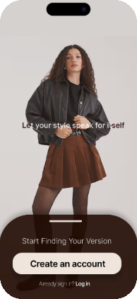
BEFORE / VERSION 01
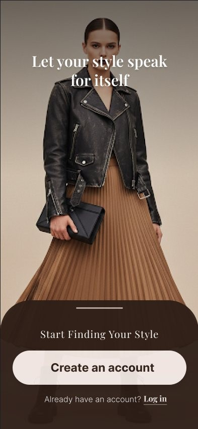
AFTER / VERSION 02 — POST-TESTING REDESIGN
What I changed
Moved the headline into upper negative space and added a subtle gradient overlay.
Why it matters
The text failed contrast on lighter parts of the photo; the PDF flags this as a WCAG contrast problem.
02 · Style selection
What testing revealedCheckboxes and radio buttons were mixed with no stated rules, and styles like “Boho” had no visual reference.
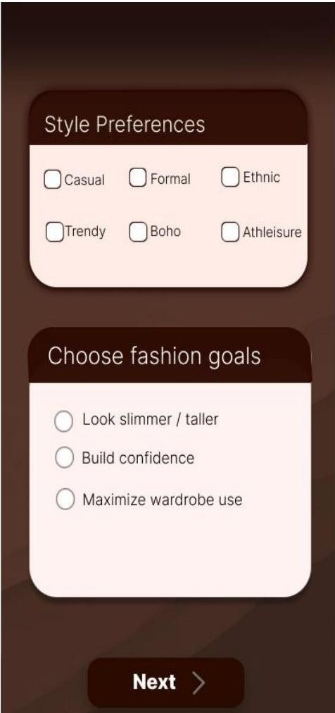
BEFORE / VERSION 01
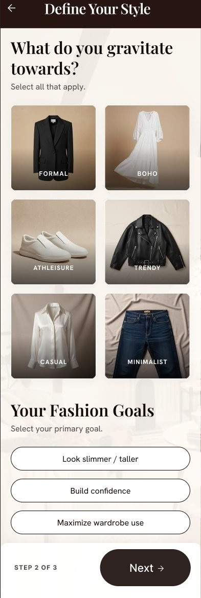
AFTER / VERSION 02 — POST-TESTING REDESIGN
What I changed
Replaced text controls with image cards, pill-style goals and “Select all that apply” microcopy.
Why it matters
Users had to recall what a style meant; images let them recognise it.
03 · Wardrobe upload
What testing revealedThe AI detected multiple items without explaining how they were handled, and there was no way to cancel or restart.
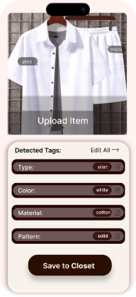
BEFORE / VERSION 01
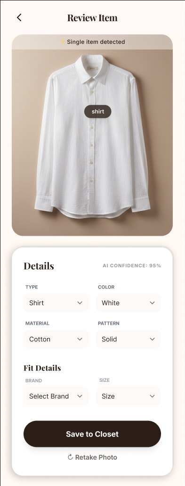
AFTER / VERSION 02 — POST-TESTING REDESIGN
What I changed
Added a back/cancel icon, “Retake Photo”, a single-item prompt and compact dropdowns with Brand and Size.
Why it matters
Returns control to the user and reduces the dense tagging form.
04 · Dashboard discoverability
What testing revealedUsers could not find the AI Stylist, and did not know the Today’s Outfit card was clickable.
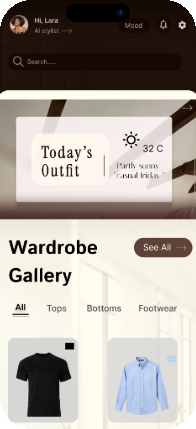
BEFORE / VERSION 01AFTER / VERSION 02 — POST-TESTING REDESIGN
What I changed
Two-tone layout, a visible “Try On” button on the outfit image, and a labelled bottom navigation including My Stylist.
Why it matters
An action placed on the thing it affects is easier to associate with its result.
05 · AI Stylist
What testing revealedSuggested outfits could not be acted on, leaving users feeling trapped.
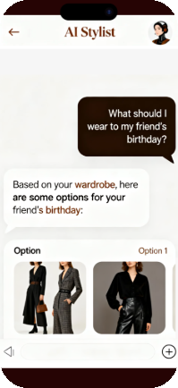
BEFORE / VERSION 01AFTER / VERSION 02 — POST-TESTING REDESIGN
What I changed
Titled outfit cards with Try On / Save / Not me, suggestion pills above the input, and a “+” quick-upload button.
Why it matters
Recognition over recall, user control, and a lower-effort start than a blank input.
These redesigns have not been retested, so I make no claim about improved SUS or task completion.
09 / Version 02
A clearer way to find your style.
Post-testing redesign. Not yet validated by a second round.
Discover
Welcome, style image cards, profile set-up.
Organise
Review Item with recovery actions and structured metadata.
Explore & act
Dashboard with Try On; My Stylist with Try On / Save / Not me.
All 7 revised screens
10 / Visual language
Warmth, clarity and confidence.
Espresso #2C1E1A
Cocoa #8D6E63
Latte #E8DCCA
Warm cream #F4EFE6
Paper #FDFBF7
Aa Playfair Display
Headlines, editorial emphasis
Aa Inter
Body and interface
Save to ClosetSaveDate night outfit
Components are shown as simple recreations of the revised UI patterns; a full component library was not produced.
11 / Reflection
What testing changed in my thinking.
The first interface prioritised atmosphere: warm colour, a collage-like dashboard and a lot of personal data collected up front. It looked finished, and I assumed that meant it was clear.
Testing showed otherwise. People could not find the AI Stylist, did not realise the outfit card was tappable, and could not back out of the upload flow. The reported SUS of 55 matched what I saw in those tasks.
A visually polished interface is not necessarily an intuitive experience.
Discoverability became the main question, because a feature nobody finds cannot help anyone. The redesign tried to make actions visible and reversible: a Try On button on the outfit image, labelled navigation, cancel and retake in upload, and outfit cards people can act on.
What still needs testing. The revised screens respond to the documented findings but have not been retested, so I cannot say they are better yet. They need another usability round before I would call them validated.